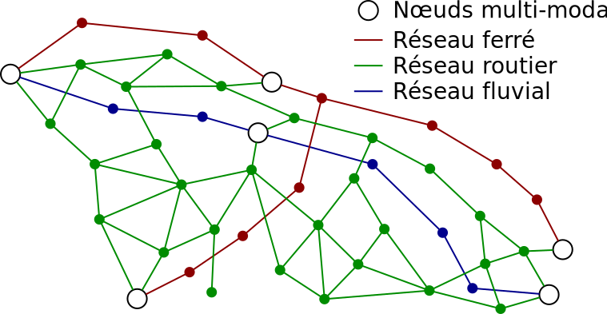

Thibaut Démare - LITIS
thibaut.demare@univ-lehavre.fr
thibaut.demare@univ-lehavre.fr
Modélisation de l'interface logistique port-métropole à l'aide d'une approche agent et de graphes dynamiques
Bilan CLASSE
Le Havre
5 Avril 2017
Le Havre
5 Avril 2017
Modélisation de l'interface logistique port-métropole à l'aide d'une approche agent et de graphes dynamiques
Stefan Balev, Thibaut Démare, Dominique Fournier, Eric Sanlaville
Normandie Université, Le Havre - LITIS
CLASSE 2
5 Avril 2017
Plan
- Problématique
- Modèle et implémentation
- Résultats
- Vers la multi-modalité
- Conclusion et perspectives
Problématique
Présentation d'un système logistique
- C'est une composante essentielle d'un système spatial dans lequel les acteurs s'organisent autour d'infrastructures pour faire circuler des flux de marchandises, d'information et financier sur un territoire.
- Ces systèmes possèdent des nœuds d'accès par lesquels la marchandise entre ou sort.
- Des métropoles, ou aires urbaines, attirent et génèrent les flux.
- Le système subit plusieurs contraintes de nature différente (spatiale, économique, politique, ou écologique).
Un organisation distribuée du flux
Figure 1 : Chaque acteur est responsable d'une partie seulement du flux auto-organisé de marchandises. Leurs interactions et méthodes de travail permettent une organisation cohérente.
L'interface port-métropole
Figure 2 : L'interface qui connecte les logistiques portuaire et métropolitaine.
Problématique
- On cherche à comprendre, à de multiples échelles, comment des acteurs, autonomes et très hétérogènes, s'organisent collectivement autour des infrastructures à leurs dispositions pour gérer des flux soumis à un ensemble de contraintes.
- Nous proposons un modèle agent qui représente les propriétés, contraintes et comportements locaux d'un système logistique pour en reproduire le fonctionnement global grâce à la simulation.
- La simulation permet alors de tester différents scénarios pour comprendre comment des décisions locales impactent l'ensemble du système.
Modèle et implémentation
Architecture générale

Figure 4 : Représentation générale du modèle
Les agents
Figure 7 : Les agents implémentés.
Le réseau de transport

Figure 6 : Un réseau multi-modal et dynamique
Figure 6 : Un réseau multi-modal et dynamique
Résultats et analyses
Impacts des stratégies de réapprovisionnement sur les ruptures de stock
Évolution du trafic dans un réseau dynamique
Impacts de l'attractivité des ports sur le trafic
Vers la multi-modalité
Modéliser la multi-modalité
- Transitaires :
- cherchent un chemin pour la marchandise sur un réseau multi-modal.
- peuvent sélectionner l'itinéraire le moins cher, le plus court (en durée ou en kilomètre), ou le moins cher à échéance.
- Transporteurs routiers :
- proposent des itinéraires à chaque demande d'un transitaire.
- Transporteurs maritimes et fluviaux :
- proposent à l'avance des itinéraires réguliers.
Modéliser la multi-modalité
- Véhicules :
- Volume maximal (en EVP).
- Vitesse.
- Itinéraire à respecter.
- Coût au kilomètre et par EVP.
- Les camions ont des caractéristiques homogènes mais pas les navires ou les barges fluviales.
- Terminaux :
- Connectés par différents modes de transport.
- Vitesses de manutention différent par mode de transport.
- File d'attentes des marchandises entrantes/sortantes.
Conclusion et perspectives
- On dispose d'une simulation fonctionnelle, dynamique et désagrégée permettant d'observer l'évolution d'un système logistique en fonction de différents paramètres et scénarios.
- Un travail de conception et d'implémentation est encore nécessaire (d'abords concernant le fluvial, mais aussi pour le ferroviaire).
- Un travail d'étudiants est en cours pour développer une interface graphique plus facile d'utilisation.
- On souhaite également travailler sur la détection de communautés.
Merci pour votre attention !
thibaut.demare@univ-lehavre.fr

Publications
- Thibaut Démare, Cyrille Bertelle, Antoine Dutot, and Laurent Lévêque. A systemic approach with agent-based model and dynamic graphs to understand the organization of a logistic system. In Arnaud Serry and Laurent Lévêque, editors, Short Sea shipping : Myth or future of regional transport, chapter 12, pages 211–223. Editions EMS, May 2016.
- Thibaut Démare, Cyrille Bertelle, Antoine Dutot, and Laurent Lévêque. Agent-based approach and dynamic graphs to model logistic corridor. Procedia Computer Science, 52 (0) :968 – 973, 2015. ISSN 1877-0509. doi : http://dx.doi.org/10.1016/j.procs.2015.05.174. The 6th International Conference on Ambient Systems, Networks and Technologies (ANT-2015), the 5th International Conference on Sustainable Energy Information Technology (SEIT-2015).
- Thibaut Démare, Cyrille Bertelle, Antoine Dutot, and Laurent Lévêque. Logistic corridors modelled with agent-based approach and dynamic graphs. In 4th International Conference on Advanced Logistics and Transport (ICALT), pages 199–204, May 2015. doi : 10.1109/ICAdLT.2015.7136619.
- Thibaut Démare, Cyrille Bertelle, Antoine Dutot, and Laurent Lévêque. Agent-based model and networks : the modelling of the maritime and metropolitan interfaces of the seine axis. In Devport international conference for ports, maritime transport and regional development : Adaptation of maritime, port and logistics actors to hazards of globalization, June 2014.
- Thibaut Démare, Cyrille Bertelle, Antoine Dutot, and Laurent Lévêque. Interface maritime et interface métropolitaine : vers la modélisation de l’axe seine par les réseaux. In Laurent Beauguitte (coord.), editor, Les réseaux dans le temps et dans l’espace, Paris, Actes de la deuxième journée d’études du groupe fmr (flux, matrices, réseaux), pages 249–263, 2013.